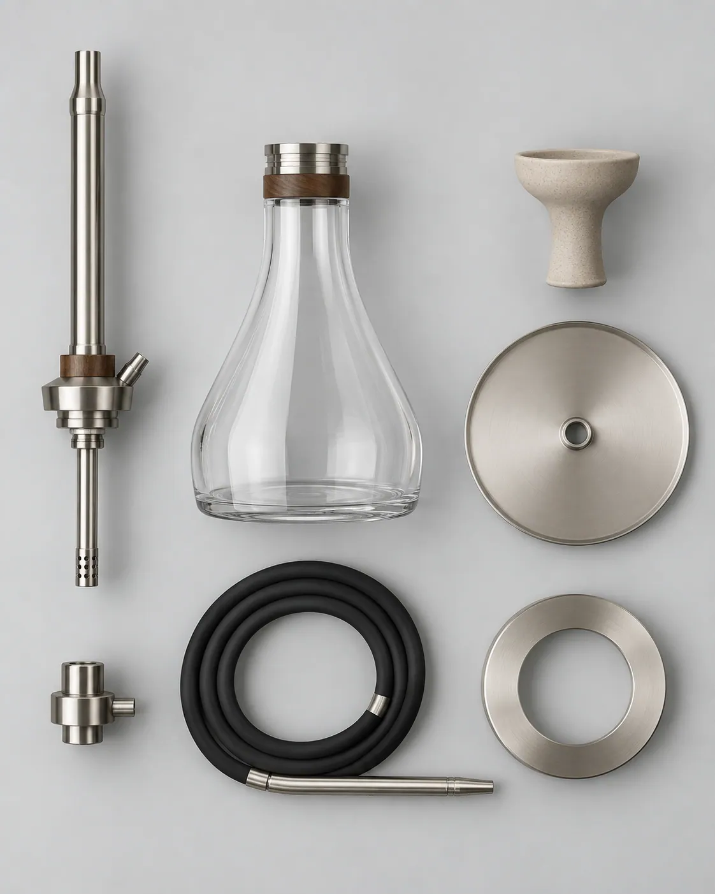

Klasik cam şişe
Modele özel form ve kapasite; boyun ağzı 45° bayonet yakaya göre taşlanmış. Opsiyonel cam alternatifi.
Kırılan, yıpranan ya da yükseltmek istediğiniz her parça ayrı satılır. Tüm NARION modelleri aynı 45° bayonet kilit standardını kullanır; parça seçerken aşağıdaki uyumluluk tablosuna bakın.

Fiyatı sitede yayımlanmış parçalarda fiyat gösterilir; diğerleri talep üzerine teklif edilir.
Modele özel form ve kapasite; boyun ağzı 45° bayonet yakaya göre taşlanmış. Opsiyonel cam alternatifi.
Paslanmaz çelik yaka, cam boyna sabitlenir; şişe–gövde, gövde–tepsi ve marpuç çıkışı için aynı kilit profili.
Aroma tutmayan floroelastomer contalar; yıllık değişim önerilir.
Yıkanabilir, koku tutmayan silikon marpuç; bayonet uçlu bağlantı.
Hijyenik silikon ağızlık (5'li) ve metal ağızlık seçenekleri.
NARION için özel tasarlanmış kordierit teknik seramik lüle; Smart HMD yerine klasik içim için.
Klasik lüleyle eşleşen, kapaklı ısı yöneticisi; közü tütüne değdirmeden homojen ısı.
Lüle altı paslanmaz tepsi; kül ve sıcak parçaları masadan uzak tutar.

Tüm modellerde standart akıllı lüle. Ek veya yedek başlık; PID kontrollü seramik ısıtıcı.
Seans bölünmeden değiştirilebilen yedek lityum batarya.
Smart HMD için manyetik şarj doku.
Sessiz çekiş için daldırma borusu ucu.
Bayonet kilit 17 modelde ortaktır. Marpuç ve conta seti KOZA · LADİN · MANOLYA için ortaktır; üretim programındaki modeller için ölçüler teyit edilecektir.
| Model | Klasik cam şişe | 45° bayonet yaka | Marpuç & conta seti | Lüle |
|---|---|---|---|---|
| NARION KOZA | Ayrı şişe yok — Tritan™ gövde penceresi | ✓ Ortak standart | ✓ Ortak set | Smart HMD standart · klasik lüle opsiyonel |
| NARION LADİN | Cam şişe — 850 ml | ✓ Ortak standart | ✓ Ortak set | Smart HMD standart · klasik lüle opsiyonel |
| NARION MANOLYA | Cam şişe — 800 ml | ✓ Ortak standart | ✓ Ortak set | Smart HMD standart · klasik lüle opsiyonel |
| NARION SERVİüretim programı | Cam şişe — 950 ml | ✓ Ortak standart | Teyit edilecek | Smart HMD standart · klasik lüle opsiyonel |
| NARION PRİZMAüretim programı | Cam şişe — 700 ml | ✓ Ortak standart | Teyit edilecek | Smart HMD standart · klasik lüle opsiyonel |
| NARION OCAKüretim programı | Cam şişe — 750 ml | ✓ Ortak standart | Teyit edilecek | Smart HMD standart · klasik lüle opsiyonel |
| NARION FENERüretim programı | Cam şişe — 750 ml | ✓ Ortak standart | Teyit edilecek | Smart HMD standart · klasik lüle opsiyonel |
| NARION NOMADüretim programı | Cam şişe — 450 ml | ✓ Ortak standart | Teyit edilecek | Smart HMD standart · klasik lüle opsiyonel |
| NARION AURAüretim programı | Cam şişe — 850 ml | ✓ Ortak standart | Teyit edilecek | Smart HMD standart · klasik lüle opsiyonel |
| NARION MONOLİTüretim programı | Cam şişe — 800 ml | ✓ Ortak standart | Teyit edilecek | Smart HMD standart · klasik lüle opsiyonel |
| NARION İNCİüretim programı | Cam şişe — 700 ml | ✓ Ortak standart | Teyit edilecek | Smart HMD standart · klasik lüle opsiyonel |
| NARION YALINüretim programı | Cam şişe — 750 ml | ✓ Ortak standart | Teyit edilecek | Smart HMD standart · klasik lüle opsiyonel |
| NARION ZEYTİNüretim programı | Cam şişe — 650 ml | ✓ Ortak standart | Teyit edilecek | Smart HMD standart · klasik lüle opsiyonel |
| NARION ARDIÇüretim programı | Cam şişe — 700 ml | ✓ Ortak standart | Teyit edilecek | Smart HMD standart · klasik lüle opsiyonel |
| NARION KEMERüretim programı | Cam şişe — 750 ml | ✓ Ortak standart | Teyit edilecek | Smart HMD standart · klasik lüle opsiyonel |
| NARION YÖRÜNGEüretim programı | Cam şişe — 700 ml | ✓ Ortak standart | Teyit edilecek | Smart HMD standart · klasik lüle opsiyonel |
| NARION ÇAKILüretim programı | Cam şişe — 600 ml | ✓ Ortak standart | Teyit edilecek | Smart HMD standart · klasik lüle opsiyonel |
Not: Elektronik parçaların (Smart HMD, batarya, şarj doku) satışı ve teslimatı, ülkeye göre mevzuata tabidir; teklif aşamasında teyit edilir.
45° çevir, kilitlenir. Vida yok, diş sıyırması yok.
Aynı yaka, conta ve adaptör tüm modellerde; yanlış parça riski düşer.
Cam şişe kırılırsa metal yaka yeniden kullanılabilir; yalnızca cam yenilenir.